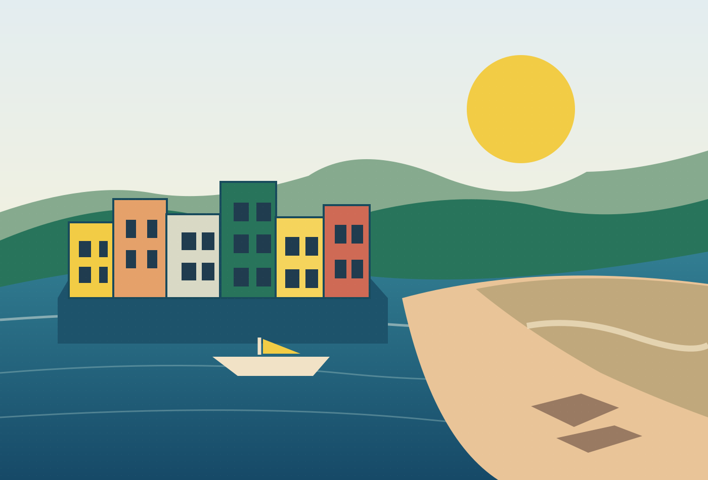

HEPING ISLAND · KEELUNG · TAIWAN
和平島，
不只有海。
海岸與港灣是這座島的風景；廟宇、老街與人們的日常，則寫成了它的故事。從這裡出發，用自己的步調重新認識和平島。

THE ISLAND, BEYOND THE SHORE三協會聯合製作和平島長青協會和平島文化發展協會台灣通史協會
一座島，
有無數種被認識的方式。
有無數種被認識的方式。
來看海，也來聽故事。從西班牙人留下的歷史線索、港灣發展的歲月，到今日仍與生活相連的信仰和料理；我們希望把和平島介紹得更完整，也更貼近生活。
SIX WAYS TO EXPLORE
用六種方式，
走進和平島。
不用從頭讀到尾，選你感興趣的主題開始。這個網站是讓人們認識和平島的第一站。
MORE THAN A DESTINATION
和平島的故事，
不只留在歷史書裡，
也藏在今天的巷弄與人情。
一個認識家鄉、分享文化，也歡迎旅人走進來的地方。
START HERE